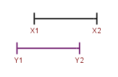
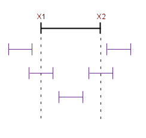

There is a simple mathematical problem that sometimes comes up in programming1. The problem is:
Given two one-dimensional2 line segments, determine whether they intersect, i.e. have points in common.
Here's a graphical representation of the problem. The two segments are drawn one above the other for demonstration purposes:
At first sight, this looks like a problem with many annoying corner cases that takes a lot of dirty code to implement. But it turns out that the solution is actually very simple and clean. The two segments intersect if and only if X2 >= Y1 and Y2 >= X1. That's it.
It may be difficult to convince yourself this works by simply looking at the image above, so here is another that makes it much clearer:
In this image we see all the possibilities of the positions of the second segment relatively to the first. It should take only a few seconds to verify that the algorithm returns a correct result for all 5 cases.
Here's Python code that implements this solution:
def segments_intersect(x1, x2, y1, y2):
# Assumes x1 <= x2 and y1 <= y2; if this assumption is not safe, the code
# can be changed to have x1 being min(x1, x2) and x2 being max(x1, x2) and
# similarly for the ys.
return x2 >= y1 and y2 >= x1
1 I ran into it while implementing a binary application format reader, that needed to support insertion data records. Each data record has a start and an end (memory address). The problem comes up when testing whether two records collide.
2 One-dimensional here means that they only have a single coordinate, i.e. all can be laid down on a line that's parallel to one of the axes.